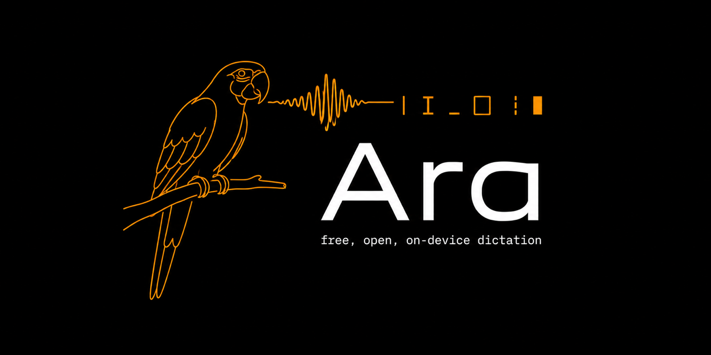

Dictation that never leaves your Mac.
Hold fn, speak, release — the text lands at your cursor, cleaned up. Whisper transcribes on the Apple Neural Engine, an open 1.5B model does the editing, both on your machine. Free, MIT, no account, no subscription, no server.
curl -fsSL https://karniej.github.io/ara-parrot/install.sh | sh
It fetches the latest DMG, prints its checksum, and
installs Ara.app. Or
download it yourself, or
build from source.
Builds are unsigned — no Apple Developer ID — so the first launch needs right-click → Open. Cleanup runs on a local model that is a separate one-time ~900 MB download.
macOS 14+ · Apple Silicon